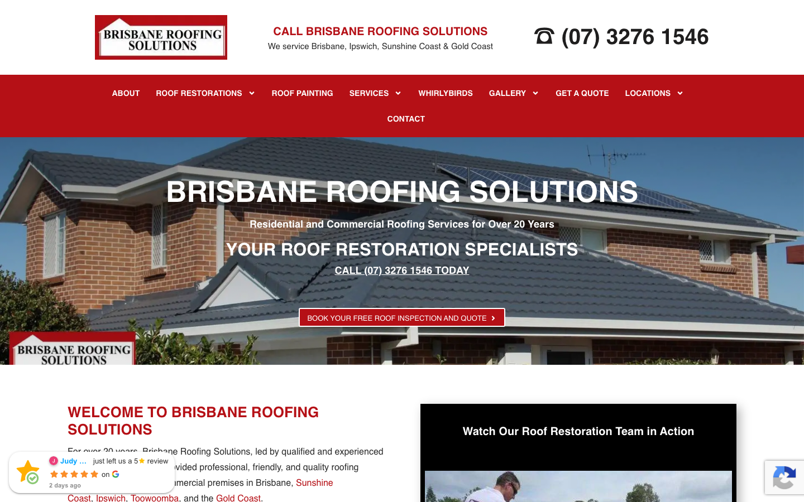

68/100 · moderate_candidate · 行业：roofer · 地区：Brisbane · Google 评价：4.8★ （119 条）
投入分级： C 批量轻触 — 模板邮件 + 报告
PDF 链接，无主动跟进
触发依据： - C · moderate_candidate · audit 68 · 119 评论 4.8★ (未达 B 标准)
下一步行动： 标准模板邮件 + master.md PDF 链接，无主动跟进。等客户回复触发后再投入。
线索来源 · 联系开场可用: - 来源:
Google Places API (官方搜索) - 搜索关键词:
roofer brisbane - 结果排名: 第 3 位 -
首次发现: 2026-05-09 - Batch:
places-roofer-brisbane-202605150200
审计结论： audit_score=68 → moderate_candidate · weakest: seo 31, visual 50 · fired: high_traction_old_site
已触发的 hard triggers：
high_traction_old_site
independent_https_site📞 建议联系时间: Tue / Wed / Thu 10:00 – 12:00 (local) · 工作日中段开门 + 避免周一开机 / 周五下班 / 午餐时间 · confidence: high
Hours: Mon: 08:00-17:00 · Tue: 08:00-17:00 · Wed: 08:00-17:00 · Thu: 08:00-17:00 · Fri: 08:00-17:00 · Sat: closed · Sun: closed
来自 Google Business Profile 的 6 张商户照片（店面 / 作品 / 产品 / 团队等）。这是商户自己挑出来给客户看的素材，销售可以挑作为提案背景图、redesign hero、social media 内容。



慢速 4G 加载实景视频（1.6 Mbps · 150ms 延迟 · 4× CPU 节流，模拟真实手机访客的体验）：
An established business with strong trust signals but 2012-era design patterns that reduce mobile conversion clarity.
新鲜度 4/10 · 信任度 6/10 ·
转化准备度 5/10 · 设计年代 outdated
值得保留的优点： - Phone number (07) 3276 1546 is prominently displayed at the top on both desktop and mobile, click-to-call on mobile - Clear headline ‘BRISBANE ROOFING SOLUTIONS’ and subheading establish location and specialty immediately - Business has 20+ years messaging visible in mobile hero, building credibility for longevity
Customers consistently praise Brisbane Roofing Solutions for their exceptional cleanliness, detailed communication, and high-quality restoration results that stand the test of time.
评分分布（基于 Google 全量评论）：
| 星级 | 条数 | 占比 |
|---|---|---|
| 5★ | 109 | 91.6% |
| 4★ | 3 | 2.5% |
| 3★ | 2 | 1.7% |
| 2★ | 1 | 0.8% |
| 1★ | 4 | 3.4% |
| 合计 | 119 | 100% |
92% 是 5★ 评价 — 这条数据本身就是巨大的销售素材，redesign 后的网站应该把它放在 hero 区。
一致夸赞： spotless cleanup ·
no overspray · detailed quoting ·
excellent communication ·
long-lasting results
可直接放上 redesign 后网站的 quote：
“It’s been eight months since our roof was painted, and it still looks brand new.” — Christine, ★★★★★
放哪：Hero section proof of durability and quality
“They left the area spotless with no overspray whatsoever.” — Christine, ★★★★★
放哪：Addressing common customer fear of mess/damage
“The whole process… was smooth and efficient. The tradies… cleaned up well.” — Jeff, ★★★★★
放哪：Testimonial section highlighting professionalism
“Quote was very detailed and a fair price offered.” — Tom, ★★★★★
放哪：Pricing transparency section
技术事实
title=‘### CALL BRISBANE ROOFING SOLUTIONS’ contains-name=true contains-niche=false
普通话翻译
你网站的浏览器标签 title 没把业务名字 + 服务关键词写清楚（比如该写「Brisbane Roofing Solutions | Roof Restoration & Repairs - roofer Brisbane」，但目前是泛泛一句）。
对客户的影响
Google 搜索结果里展示的就是这个 title。写不清楚 = 排名靠后 + 即使排上来客户也不知道是不是匹配的服务。SEO 最便宜的修复，但很多本地企业完全没做。
技术事实
0tags
普通话翻译
页面要么没有 H1 标题（搜索引擎无法理解页面主旨），要么有多个 H1（搜索引擎不知道哪个是主题）。
对客户的影响
H1 是搜索引擎判断页面主题最权威的信号。写错或缺失 = 关键词排名拉低；同一页面同样的内容，H1 写对的可以排到前 3 页，写不对的可能挂在第 7 页。
技术事实
no LocalBusiness JSON-LD
普通话翻译
网站没有 LocalBusiness JSON-LD 结构化数据（让 Google / AI 知道你是本地企业、地址、电话、营业时间的标准格式）。
对客户的影响
Google「附近的服务」「Knowledge Panel」「AI Overview」都依赖这类结构化数据。没有 = 即使排名上去也不会出现在右侧 Knowledge Panel 或地图卡片里 — 错失高转化的展示位。AI agent / ChatGPT 引用本地商家时也是基于这些数据。
技术事实
The hero headline ‘BRISBANE ROOFING SOLUTIONS’ and subheading ‘YOUR ROOF RESTORATION SPECIALISTS’ use thick white text with heavy black drop shadows on both desktop and mobile
普通话翻译
网站首页大标题使用了厚重的阴影效果,这种设计风格在2010年代很流行,但现在看起来过时了,会让访客觉得公司网站很久没更新
对客户的影响
访客在8秒内就会判断网站是否专业可信。过时的视觉设计会让30-40%的访客认为企业可能已经不营业或不够专业,直接离开去找竞争对手
正确长啥样
White text on a 40-60% dark gradient overlay (top-to-bottom or radial from center) with no shadow, or a solid dark semi-transparent box behind the text with 24px padding and no shadow, ensuring 4.5:1 contrast without visual artifacts
Redesign 怎么改
Replace text shadow with a CSS linear-gradient overlay (rgba(0,0,0,0.5)) on the hero image container, remove all text-shadow properties, use 700-weight white sans-serif for the headline
技术事实
Desktop shows a dark burgundy-red horizontal navigation bar with white text spanning the full width below the logo/phone header; mobile shows a matching red hamburger menu bar
普通话翻译
深红色导航条颜色太重,让人眼睛疲劳,而且抢走了电话号码的注意力。现代网站通常用白色或浅灰色导航,看起来更清爽专业
对客户的影响
移动端用户70%以上会直接点击电话号码拨打。深色导航条让电话号码视觉上不够突出,可能导致10-15%的潜在客户因为不方便找到联系方式而放弃
正确长啥样
A white or light gray navigation bar with dark gray text (AA-compliant contrast), or eliminate the horizontal nav entirely on desktop and use a sticky header with logo + phone + hamburger menu that collapses to essentials, letting the hero breathe
Redesign 怎么改
Change navigation background to white (#FFFFFF), text to dark gray (#2C3E50), add a 1px bottom border in light gray (#E5E5E5); on mobile keep the hamburger icon but use a white background with gray icon so the phone number remains the visual priority
技术事实
Below the hero headline on desktop are two red buttons side-by-side (‘REQUEST A QUOTE’ and ‘EMERGENCY ROOFING’), both similar size (approximately 140-160px wide, 36-40px tall) with identical red background and white text
普通话翻译
首页两个红色按钮大小和颜色完全一样,访客不知道该点哪个。现代网站设计会有一个明显的主按钮,其他为次要样式,引导用户行动
对客户的影响
按钮设计不清晰会导致15-25%的点击率损失。当访客犹豫该选哪个选项时,很多人会选择什么都不点,直接离开网站
正确长啥样
Single primary CTA button minimum 200px wide × 56px tall on desktop with high-contrast color (e.g. coral #FF6B6B or safety-orange #FF8C42), secondary action styled as ghost button (white border, transparent fill) or text link below; positioned centrally with 40px vertical spacing
Redesign 怎么改
Make ‘REQUEST A QUOTE’ the primary button: 240px × 64px, coral background, bold white text, 4px border-radius; move ‘EMERGENCY ROOFING’ to a secondary ghost-style button below (white border, no fill, 200px × 48px), or integrate emergency phone as a small badge in the header instead
我们前面那段「慢速 4G 加载视频」是我们这边的实验室结果。这一段是 Google 自己对你网站打的分，包括过去 28 天 真实访客的网络体验数据（CRUX field data）。
Lighthouse 分数（实验室）：
| 维度 | 分数 |
|---|---|
| 性能 (Performance) | 54/100 |
| 可访问性 (Accessibility) | 90/100 |
| 最佳实践 (Best Practices) | 73/100 |
| SEO | 92/100 |
Lab 关键指标： LCP 3.3s · FCP
2.3s · CLS 0.000 · TBT 2101ms
Google 建议的优化项（按节省时间排序，前 2）：
Lighthouse 分数： Performance 39 · A11y 87 · Best Practices 77 · SEO 92
PSI 给的是宏观分数，下面是具体可改的两块：图片格式与 tracker 脚本。
总评： 部分优化 — 还有空间
具体问题： - [minor] 3 张图仍是 JPG/PNG，建议转 WebP - [minor] 15/20 张图无响应式 srcset — 移动端浪费带宽 - [major] 13/20 张图缺 alt 文字 — 影响 SEO + 可访问性 + AI 抓取
已识别的 tracker：
| 工具 | 类型 | 请求数 | 字节 |
|---|---|---|---|
| Google Tag Manager | analytics | 3 | 460.2 KB |
| DoubleClick | ad_serving | 1 | 2.2 KB |
| Google Analytics | analytics | 1 | 0.0 KB |
观察： 5 个 tracker 合计加载了 462 KB —— 这些都是阻塞主线程的脚本，是性能 + 隐私双角度的销售切入点。redesign 时可以建议清理不再使用的 tracker。
客户最常担心的问题：「我重做网站，会不会丢掉 Google 排名？」这一段直接回答。
https://brisbaneroofingsolutions.com.au/sitemap_index.xml页面分类：
| 类型 | 数量 |
|---|---|
| service_area_page | 33 |
| 服务详情页 | 25 |
| 顶层页面 | 10 |
| area_page | 2 |
| 内页 | 2 |
| 作品集 / 案例 | 1 |
| 首页 | 1 |
| 法律 / 隐私 | 1 |
| Blog 文章 | 1 |
| 联系 / 报价 | 1 |
| 客户评价 | 1 |
Sitemap lastmod 跨度： 最旧 2025-03-03 → 最新 2026-01-30
Redirect 计划承诺： redesign 上线时我们会附一份 50 条 1:1 redirect 表（旧 URL → 新 URL），保证 Google 已经索引的页面权重无损迁移。已经在 Google 第一二页的关键词不会丢。
长尾覆盖： 强 — 已有 5+ 服务×区域页，长尾流量基础在
现有服务页样本：
/complete-guide-to-quality-roof-restorations/ ·
/does-a-new-roof-increase-the-value-of-your-home/ ·
/broken-roof-tiles-causes-risks-and-how-to-fix-them/ ·
/dangers-of-a-leaky-roof/ ·
/how-much-does-a-new-roof-cost/
现有服务×区域页样本：
/roof-cleaning-brisbane-how-to/ ·
/why-regular-roof-inspections-can-save-you-thousands-in-repairs/
· /metal-vs-tile-roofing-brisbane/ ·
/choosing-the-right-roof-colour-how-it-impacts-energy-efficiency/
· /brisbane-roof-repairs/
客户能不能 方便地 把信息留下来 =
直接的转化路径。这一段审视所有 <form> 元素的可用性 +
防 spam 配置。
已部署的人机验证： - reCAPTCHA v2 (visible “I’m not a robot”) — 高摩擦 - reCAPTCHA v3 (invisible) — 低摩擦
Audit 总结：
quarantine）strong (SPF + DKIM
+ DMARC 齐全)从网站源码识别出来的工具，能帮我们判断这位客户的数字成熟度。
数字成熟度打分： 4 / 6 （高 — 客户懂数字营销，redesign 谈预算时不必从零教育）
客户可能有数月 / 数年的历史数据 + 广告投放受众 sit 在这些 ID 上面。重做时必须用同一套 ID 重新接进新网站，否则等于清零所有累积。
我们 redesign 交付清单会把这些列为「必须 setup 项」。
本地服务的客户在掏钱之前会查这些凭证。缺失 = 客户跳到下一家。
信任分： 20/100
GEO = Generative Engine Optimization。ChatGPT、Perplexity、Google AI Overviews 这些 AI 搜索产品不像传统搜索引擎那样按”关键词排名”工作，它们直接抓取结构化数据并把答案合成给用户。如果你的网站在 AI 抓取这一块做得不到位，等于在生成式搜索时代隐身。
AI 可发现性总分： 50 / 100 — AI agent 抓取部分支持，但关键 schema / 凭证 / FAQ 缺失
localbusiness_schema — Organization JSON-LD
present (LocalBusiness preferred for local services)semantic_landmarks — 4 semantic landmarks
present: <main, <nav, <header, <footereeat_business_credentials — 2/4 credentials in
copy: ABN, license/QBCCeeat_warranty_trust — warranty/guarantee
mentionedjsonld_at_least_one — 6 JSON-LD block(s)
detected on pagellms_txt_present (5 分) — no /llms.txt at
standard pathai_bot_robots_policy (5 分) — robots.txt has no
explicit policy for AI crawlers (GPTBot/ClaudeBot/etc)service_schema (10 分) — no Service JSON-LDfaqpage_schema (10 分) — no FAQPage JSON-LD
(loses AI Overview / featured snippet eligibility)aggregaterating_schema (5 分) — no
AggregateRating JSON-LD (★ rating not shown in search snippets)breadcrumb_schema (5 分) — no BreadcrumbList
JSON-LDfaq_qa_pattern (10 分) — 0 question-style
heading(s) found (Q&A format helps AI extraction)销售切入： 「ChatGPT 现在每月 30 亿次搜索，本地服务用户问『Brisbane 哪家屋顶公司靠谱』，AI 回答时只引用结构化数据完整的网站。你目前在这个新阵地的得分是 50/100。」
注：这一段只给运营内部看，不进入客户报告。 用来判断这个 lead 是不是匹配我们「小网站 / 多批量 / 快上线」的产品定位。
small —
小型，符合我们标准产品包定位报价以上方 建议报价 为准（来自 entity.grade.recommended_pricing / PRODUCT_TIER_TABLE）。本段只用来判断 lead 是否匹配产品定位，不竞争报价。
触发依据： - Google 评价 119 条（≥50，有规模基础） - 网站页面数 78（≥30，中小规模） - 已部署 3 个追踪工具
redesign 是一次性收入。以下是基于这个客户当前现状自动识别的持续性服务包机会，可以在 redesign 提案签字时一并捆绑进去。
触发依据： 客户活跃度为「停滞（3-12 月没动）」，但 Google 上有 119 条 4.8★ 评价的口碑底子 — 有内容素材却没在用。
包内容： 每月 8-12 帖（FB / IG / LinkedIn 至少 2 平台）+ 4 条工程现场 reels/short videos + 月度 GBP 帖子 2 条 + 评论回复代运营。
月度费用区间： $800-1,500/月（视平台数量与内容深度）
销售切入： 「你 Google 上的 119 条好评是金矿，但你的 Facebook 已经 104 天没动过 — 这等于你把口碑资产堆在仓库里没拿去卖。我们月度包就是把这部分自动化跑起来。」
-2026-05-11-v1claude_cli · claude-sonnet-4-5-20250929gmaps docker (full reviews)